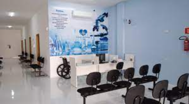
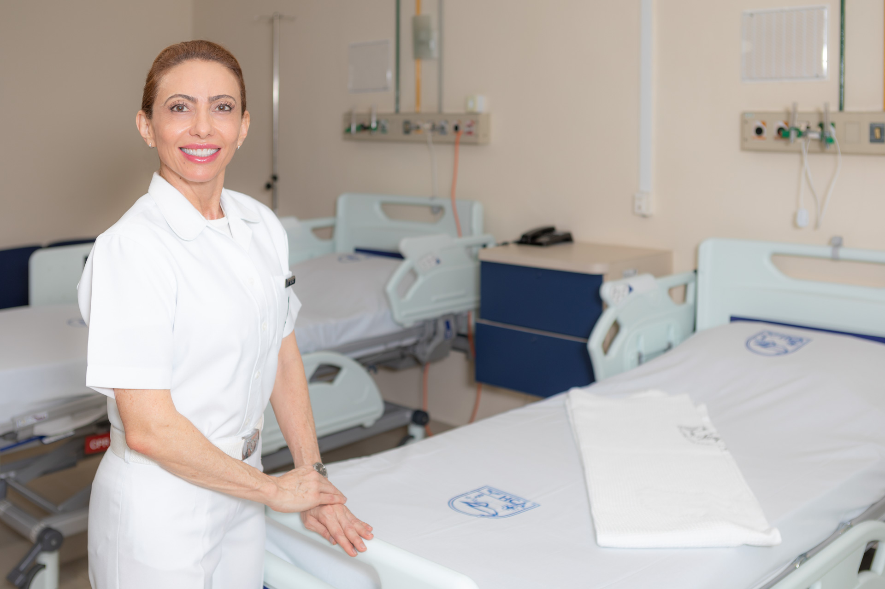

A Clínica Médica é a especialidade da Medicia focada no diagnóstico e tratamento clínico geral ou psicológico. Os médicos são responsáveis por avaliar o paciente de maneira completa e está apto a resolver a maioria das enfermidades, além de gerenciar o cuidado do paciente indicando o especialista adequado, caso haja necessidade, clique em Sobre a clínica e saiba mais sobre uma das melhores clínicas da baixada santista.
 